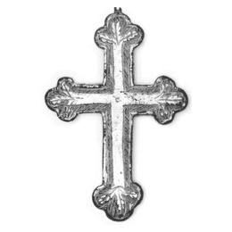

Catalog › CE-0046 · LOV1999-40
Placă posterioară de cruce pectorală cu chenar gravat
a doua jumătate a sec. XIV (1351–1400) · loc necunoscut · Muzeul Național Maghiar, Budapesta, inv. 1901.10.40
single valve of a reliquary cross, bronz; a doua jumătate a c. XIV (1351–1400); find spot unknown; kept at Muzeul Național Maghiar, Budapesta.


Identificare
- Categorie
- Valvă izolată
- Material
- Bronz
- Tehnică
- Turnare în relief; Gravare (incizie); Aurire
- Dimensiuni
- Î 80 × L 54 mm
Iconografie
- Descriere revers
- Spate gol, cu margine de 4 mm; chenar de linii gravate pe tot conturul; în mijloc, o cruce cu suprafață netedă, ale cărei capete se desfac în trei frunze gravate cu nervuri; fondul este umplut cu linii dese, oblice.
Datare și atribuire
- Datare
- a doua jumătate a sec. XIV (1351–1400)
- Centru
- Atelier local
Descoperire
- Context
- Colecție (fără context)
- Coordonate
- 47.4913° N, 19.0626° E
- Precizia locului
- Loc de păstrare (loc de descoperire incert)
Păstrare și referințe
- Colecție
- Muzeul Național Maghiar, Budapesta
- Nr. inventar
- 1901.10.40
- Bibliografie
- Zs. Lovag, Mittelalterliche Bronzegegenstände des Ungarischen Nationalmuseums (Catalogi Musei Nationalis Hungarici, Series Archaeologica III), Budapest, 1999, p. 31, cat. nr. 40, reprodusă la Abb. 40 (planșele, p. 136). Bibliografie citată în sursă: Nepublicată în sursă.
- Figura
- Abb. 40
- Planșe
- Lovag 1999, planșele, p. 136
- Observații
- Datare după Lovag: a doua jumătate a sec. XIV. XIV. Brațe cu trei capete. Sus, urma unei închizători cu balama. Piesa a fost identificată drept spate după crucile asemănătoare și după lipsa cuiului ce fixa corpul. Se spune („angeblich”) că provine din comitatul Bars, împreună cu alte obiecte, în mare parte din epoca migrațiilor. Nepublicată în sursă. Locul descoperirii nu e cunoscut cu precizie; punctul de pe hartă marchează locul de păstrare (Muzeul Național Maghiar), nu locul descoperirii. Coordonate: nu sunt date în sursă.
Citare: Corpus Encolpiorum, CE-0046, Placă posterioară de cruce pectorală cu chenar gravat, --root/piese/LOV1999-40/ (accesat 2026-10-20).